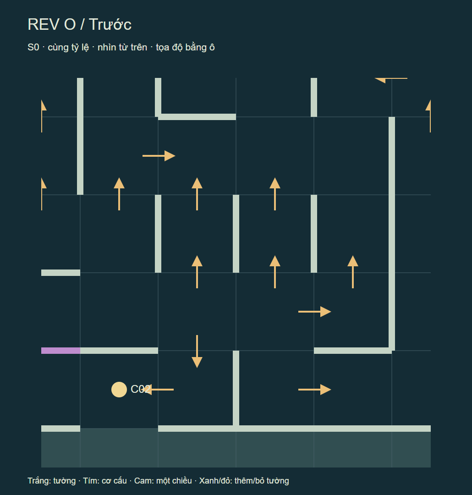
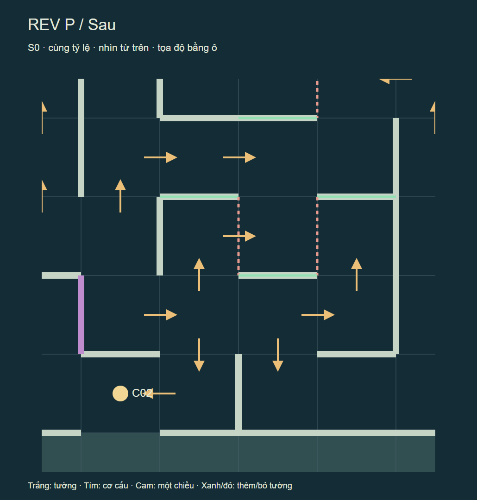
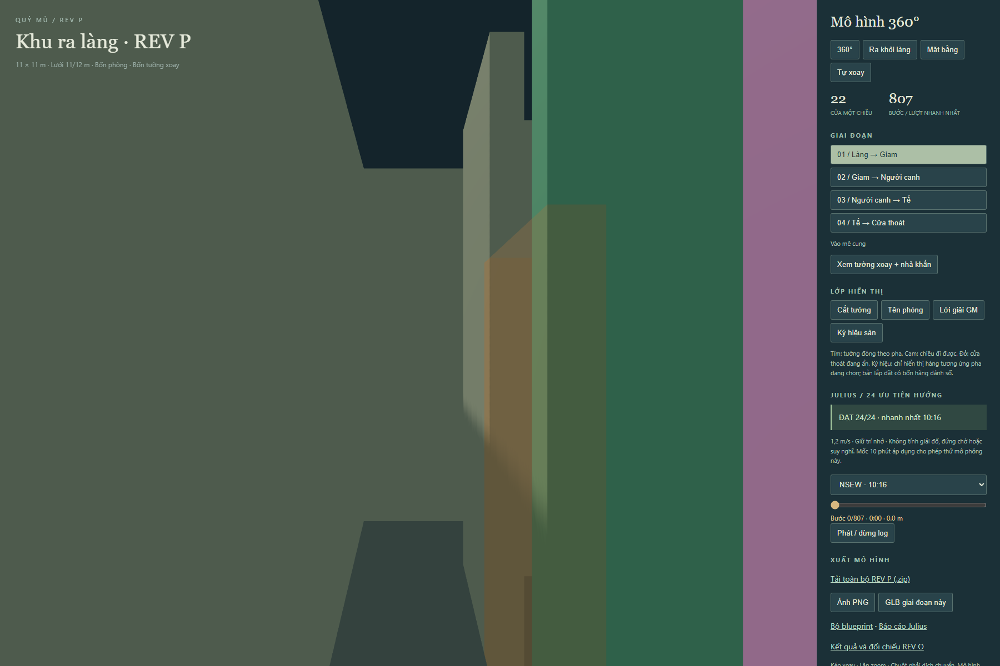

QUỶ MÙ / REV P · phát triển từ REV O
Hướng dẫn thi công và cơ chế cửa (.md)
24/24 thứ tự hướng hoàn thành. Nhanh nhất 10:16.46 (616.46 giây), chậm nhất 12:09.51. REV O: 10:13.40. Thay đổi lượt nhanh nhất: 3.06 giây.
1,2 m/s; không cộng chờ, suy nghĩ, mở cửa hoặc giải đố. Đây là phép thử bot, không đảm bảo thời gian người thật.
Đủ điều kiện kiểm tra preview deployment riêng.
Viewer 360° / S0–S3 / góc ngang mắt · Mặt bằng và tuyến giải · 24 lượt kiểm tra độc lập


Phá 2/3 đoạn dọc cùng hàng tại x ≈ 4,58 / 5,50 / 6,42 m, thêm 3 đoạn chắn ngang trong vùng gốc. Vùng gốc gồm các ô x=4…7, z=5…8 (chỉ số từ 0); các vòng sau mở rộng theo khoảng cách Manhattan và chỉ sửa hành lang. Giữ nguyên toàn bộ phòng, cửa vào/ra, cửa phòng, kích thước ô và bề dày tường. Không tăng 22 cửa một chiều, 4 tường xoay, 2 khóa và 1 panel E1.
Ngưỡng nghiệm thu đã đổi từ 900 xuống 600 giây theo yêu cầu. Các vòng tìm kiếm bên dưới giữ lịch sử mục tiêu cũ; cấu hình chọn có vùng sửa thực tế đến vòng 5. Thử hoàn nguyên phần ngoài từng vòng 0–4 chưa đạt: vòng 0 đạt 552,29 giây, vòng 1 đạt 556,88 giây, vòng 2–4 không hợp lệ; vòng 5 giữ mức 616,46 giây. Đây là vùng nhỏ nhất trong các phương án thu gọn đã kiểm tra, chưa chứng minh tối ưu toàn cục. Chi tiết kiểm tra vùng ở ngưỡng 600 giây.
| Vòng | Ô trong vùng | Lần thử | Cấu hình đánh giá mới | Tốt nhất giữ lại |
|---|---|---|---|---|
| 0 | 16 | 11465 | 861 | 9:24.51 |
| 1 | 28 | 11217 | 994 | 9:24.51 |
| 2 | 42 | 11194 | 950 | 9:24.51 |
| 3 | 55 | 31562 | 3076 | 9:24.51 |
| 4 | 68 | 39212 | 3146 | 9:24.51 |
| 5 | 73 | 41340 | 3330 | 9:24.51 |
| 6 | 77 | 41335 | 2900 | 9:36.74 |
| 7 | 80 | 41290 | 3052 | 9:36.74 |
| 8 | 83 | 38892 | 2777 | 9:36.74 |
| 9 | 85 | 45387 | 2810 | 9:36.74 |
| Tinh chỉnh 0 | Như vòng 0 | 18492 | 560 | 9:24.51 |
| Tinh chỉnh 1 | Như vòng 1 | 7397 | 572 | 9:24.51 |
| Tinh chỉnh 2 | Như vòng 2 | 7171 | 552 | 9:44.38 |
| Tinh chỉnh 3 | Như vòng 3 | 7952 | 554 | 9:44.38 |
| Tinh chỉnh 4 | Như vòng 4 | 8668 | 538 | 9:44.38 |
| Tinh chỉnh 5 | Như vòng 5 | 10308 | 534 | 9:44.38 |
| Tinh chỉnh 6 | Như vòng 6 | 10114 | 516 | 10:01.18 |
| Tinh chỉnh 7 | Như vòng 7 | 11144 | 501 | 10:07.29 |
| Tinh chỉnh 8 | Như vòng 8 | 12799 | 495 | 10:07.29 |
| Tinh chỉnh 9 | Như vòng 9 | 11890 | 487 | 10:16.46 |
Đây là tìm kiếm heuristic hữu hạn có seed và ngân sách thời gian, không chứng minh mọi cấu hình khác đều không đạt. Chọn theo số bước nhỏ nhất của 24 thứ tự hướng. Cấu hình đã chọn · Các cạnh thực sự thay đổi.
Nếu biết toàn bản đồ hoặc theo đúng ký hiệu GM, tuyến hợp lệ ngắn nhất dài 105.42 m, tương đương 1:27.85 ở 1,2 m/s. Đây là đường tắt qua đủ ba phòng theo đúng thứ tự; việc bot thăm dò chậm không loại bỏ đường giải nhanh này. Vòng quay lại dài nhất trong phân tích cửa một chiều: 35 bước.
| Chiến thuật | Kết quả | Phòng đã xong | Thời gian / điểm dừng |
|---|---|---|---|
| wall-left-N | Lặp hữu hạn | 0 | Dừng phát hiện vòng sau 70 bước |
| wall-left-E | Lặp hữu hạn | 0 | Dừng phát hiện vòng sau 70 bước |
| wall-left-S | Lặp hữu hạn | 0 | Dừng phát hiện vòng sau 70 bước |
| wall-left-W | Lặp hữu hạn | 0 | Dừng phát hiện vòng sau 70 bước |
| wall-right-N | Lặp hữu hạn | 0 | Dừng phát hiện vòng sau 13 bước |
| wall-right-E | Lặp hữu hạn | 0 | Dừng phát hiện vòng sau 13 bước |
| wall-right-S | Lặp hữu hạn | 0 | Dừng phát hiện vòng sau 13 bước |
| wall-right-W | Lặp hữu hạn | 0 | Dừng phát hiện vòng sau 12 bước |
0/8 lượt bám tường hoàn thành; 8/8 lặp trạng thái. Lượt lặp không được tính là hoàn thành trên ngưỡng thời gian. Báo cáo và log riêng.
Bộ kiểm tra dựng lại đồ thị từ tường xuất ra và vị trí cơ cấu, đối chiếu S0–S3, tuyến giải, 24 log và ký hiệu. Mọi ô hành lang có lúc tiếp cận được; phòng sau bị khóa đúng thứ tự; có đường về C02 ở từng pha và sau chuyển pha. Ký hiệu sàn rộng 0,24 m không xuyên tường. GLB được đối chiếu kích thước, vị trí từng khối tường với nguồn layout.
Trong lúc xoay, giữ E1 hiện có mở và nhả chiều toàn bộ cửa một chiều; chặn đồng thời vị trí tường cũ/mới vẫn có đường về cổng. Cảm biến vùng quét phải ngăn xoay khi có người, và giữ trạng thái nhả tới khi xác nhận tường về vị trí. Đây là kiểm tra đồ thị khái niệm, chưa chứng nhận cơ khí.

SHA-256 layout: 4bfa818db193497c01c28394ab6103fea1207aca01d534ef65c586cb47f82a6b. REV O được giữ nguyên để đối chiếu.